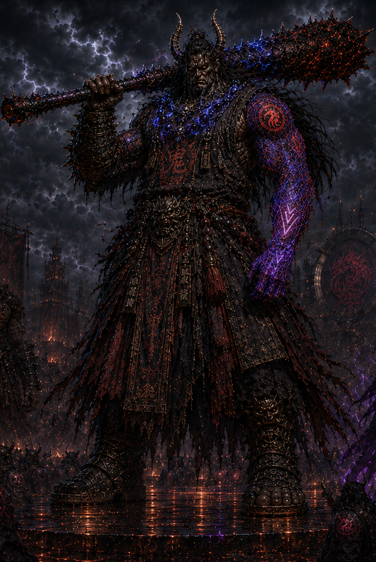

Oni Warlord
Raizhen ruled through strength, territory, weapon mastery, tribal intimidation, and survival logic. His identity was built from impact, endurance, and hierarchy before RedShiftWyrm ever touched him.
Oni Apostle of RedShiftWyrm
Raizhen began as an oni warlord: brutal, territorial, weapon-led, and shaped by survival. His transformation marks a major expansion of RedShiftWyrm’s world, moving the mythology from isolated chosen champions into full tribal conversion.

Raizhen is not a clean heroic recruit. He is a violent power structure brought under divine hierarchy. RedShiftWyrm does not erase the oni warlord. The contract weaponizes him.
Raizhen ruled through strength, territory, weapon mastery, tribal intimidation, and survival logic. His identity was built from impact, endurance, and hierarchy before RedShiftWyrm ever touched him.
When Rhagnvyr reaches the eastern islands, the conflict becomes more than a duel. The entire tribe witnesses divine gravity, environmental pressure, and the failure of brute force against cosmic law.
Raizhen becomes an Apostle: still massive, still violent, still tribal, but now marked by the RedShift contract. His strength is reorganized into divine service.
Raizhen’s transformation proves a new level of conquest. RedShiftWyrm is no longer only selecting isolated vessels. Through Raizhen, an entire oni hierarchy begins to convert.
Raizhen’s design should stay heavy, violent, ash-black, storm-lit, and ritualistic. He should not read as a clean demon hero or a generic fantasy brute.
Raizhen carries enormous oni mass, warlord posture, heavy legs, wide shoulders, battle-worn horns, and a grounded silhouette. His body language should feel like a walking fortress.
His weapon language is brutal and material-heavy: volcanic red, ash-metal, blackened surfaces, storm-blue energy veins, and the feeling of a tribal relic upgraded by RedShift pressure.
As an Apostle, Raizhen carries the left-arm RedShift contract sleeve. It marks him as selected, transformed, and bound into the divine hierarchy of RedShiftWyrm.
Obsidian black, volcanic crimson, royal violet gravity glow, electric blue storm-runes, ash-metal armor, and burnt ritual textures define his final Apostle identity.
Raizhen expands the scale of the project. Zeravyr proved Apostle transformation. Sevria proved Fang evolution. Raizhen proves faction conversion.
Raizhen anchors the eastern island movement and gives the Oni arc a central face, power structure, and transformation outcome.
The Oni value force, weapon mastery, and physical dominance. Rhagnvyr proves that gravity sits above all of those things.
Raizhen is the bridge between personal transformation and mass belief. His conversion gives the tribe a reason to follow without reducing them to faceless minions.